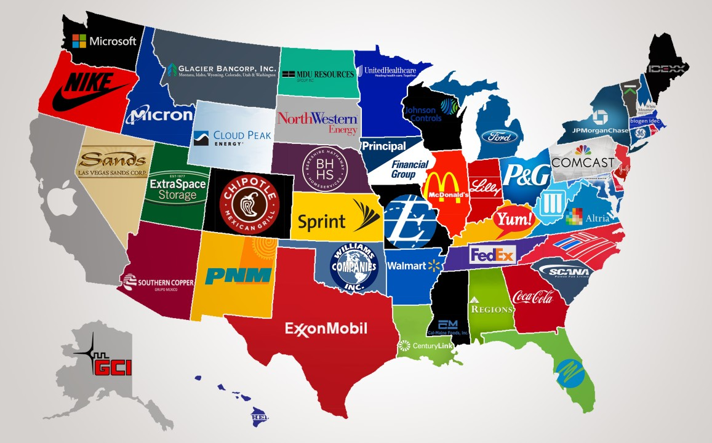
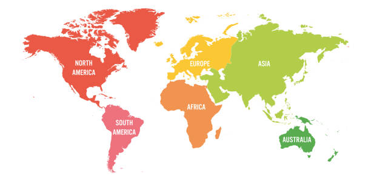

My journey into data analytics began with a question: What if I could tell stories with data? That question sparked a transition, from the world of words to the world of numbers and led me to where I am today.
I’m Mazhar Shafraz, a data analyst with a background in English Studies, where I focused on business and communication. While my academic roots are grounded in language, I’ve always been driven by a desire to solve real-world problems. I found that data provided the perfect bridge between critical thinking and practical impact.
To deepen my expertise, I completed the Google Data Analytics Professional Certificate, an intensive six-month program that sharpened my technical skills in SQL, Excel, Tableau, and Python. More importantly, it reinforced my belief in learning by doing. Rather than just studying concepts, I applied them directly to real-world case studies and projects.
Throughout my journey, I’ve worked on various data analysis projects from understanding customer behavior and sales trends in the retail and marketing sector, to evaluating performance data in e-commerce, and even conducting health data exploration, including a thorough analysis of COVID-19 trends. These experiences taught me not only how to analyze data, but how to find meaning in it and communicate that meaning clearly.
I’m often described as highly adaptable, quick to learn, and someone who thrives on turning raw data into valuable insight. My approach blends analytical thinking with business understanding and clear communication, a combination I believe is essential for impactful data storytelling.
I chose to pursue a career in data analytics because I believe in the rising power of data to shape better decisions. Looking ahead, I’m committed to growing in this field over the next ten years, continuously mastering new tools, collaborating with forward-thinking teams, and using data to make a meaningful difference.


Conducted a comprehensive data exploration project using SQL to analyze the global impact of the COVID-19 pandemic based on real-world datasets.
This project involved data extraction, transformation, and analysis across COVID-19 case numbers, deaths, vaccinations, and population metrics. Key insights generated from the analysis include:
Case Fatality Analysis, Infection Rate by Population, Most Affected Countries, Deaths by Continent, Global Summary Metrics, Vaccination Progress Tracking, Data Modeling with Temporary Tables & Views.

Compiled a series of interactive Tableau dashboards to visualize and derive actionable insights from diverse datasets across multiple domains. Each project demonstrates strong data storytelling skills, proficiency in visual design, and the ability to translate raw data into strategic understanding.
Built an interactive Excel dashboard to analyze bike sales based on customer demographics and behavioral patterns. Using Pivot Tables, slicers, and dynamic charts, the dashboard highlights key insights such as:
Average Income per Purchase, Customer Commute Distance, Customer Age Brackets.
Created a comprehensive Excel dashboard to explore global trends in Netflix content production and distribution. By utilizing Pivot Tables, slicers, and dynamic charts,
the dashboard provides a multi-dimensional view of Netflix’s content landscape through the following insights: Title Distribution by Type, Top 10 Countries with the Highest Title Production,
Top Film Directors, Top Ratings Unveiled, Duration and Season Analysis, Trends in Annual Title Counts.
Performed an Exploratory Data Analysis (EDA) on a global electronics retail dataset using SQL to uncover product-level and category-level sales insights. The analysis involved joining product and sales tables,
followed by multi-step queries to generate actionable business intelligence. Key analytical tasks included: Most Sold Products, Profit Calculation, Most Profitable Categories, Total Sales per Product, Data Cleaning for Currency Formatting.

Performed a thorough data cleaning process on a U.S. housing dataset using SQL to prepare it for accurate analysis and reporting. The project focused on identifying and resolving data quality issues through a series of structured SQL queries. Key cleaning steps included:
Standardizing Date Format, Populating Missing Property Addresses, Splitting Combined Fields, Standardizing Boolean Values, Removing Duplicates, Dropping Unnecessary Columns.

Extracted Built a Python-based web scraping project to extract structured financial data from the Wikipedia page List of largest companies in the United States by revenue. The goal was to automate the collection of company data and transform it into an analyzable dataset.

Conducted an Exploratory Data Analysis (EDA) on a world population dataset using Python to uncover insights related to population distribution, density, and country-wise impact on the world population percentage.
This EDA allows identification of countries with the highest population, detection of outliers in population density, and initial exploration of population trends, which can be further used for demographic policy, market analysis, or sustainable development planning.
Cleaned and transformed over 500,000 rows of E-Commerce data from Kaggle. Initial transformation was done in Google Sheets and imported into SQL using LOCAL INFILE for performance. Cleaning steps included:
Removing duplicates and outliers, Handling nulls and blank spaces, Standardizing data formats for consistency, Filtering and removing anomalous records, Converting data types to match SQL schema.
Performed EDA on cleaned E-Commerce dataset to derive actionable insights, including:
Sales trends over time, Top and least valuable customers, Product return rates and customer refunds,
Return rate per customer and product, Price distribution across products, Countries with the most transactions, and Total customers per country.
Designed an interactive E-Commerce dashboard in Tableau to monitor sales performance and customer behavior. The visualization provides key business insights, including:
Monthly Sales Trend analysis, Top 5 Best-Selling Products by Quantity and Revenue, Top 5 Customers based on total spending, Overall product performance metrics, Dynamic filter by month to explore temporal patterns.
This project helps identify market demand, top-performing products, and key customers to inform better business decisions.